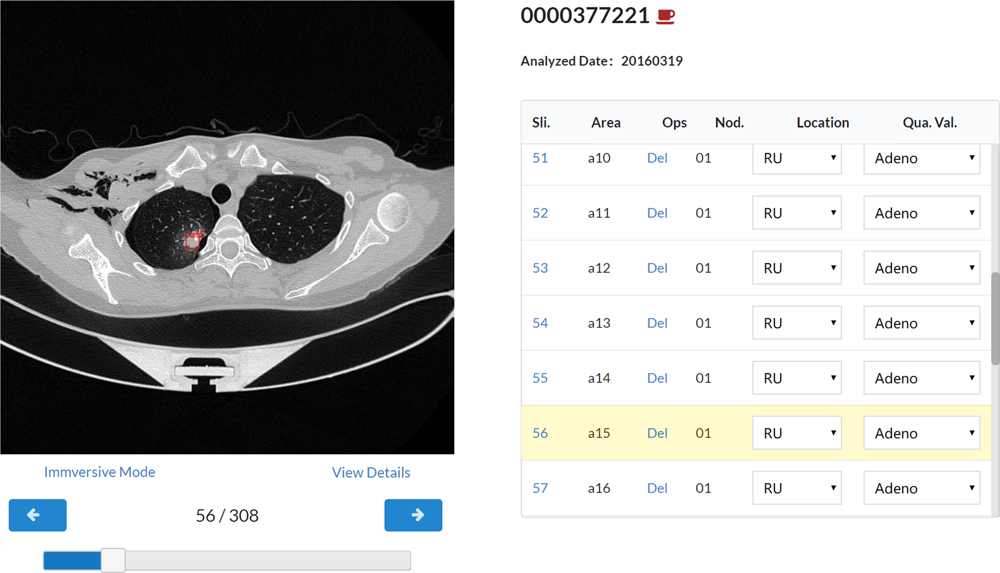

I' m now a master student studying in MachineiLab of Sichuan University, and am supposed to graduate in 2020. My main research focus on Medical Imaging Processing. I have a medical system related journal paper published , a conference paper accepted and two patents publicized. I had an internship in the Spring of 2019 and several failed attempts looking for an internship. I have some abilities in programming and can develop web applications using Node.JS and write scripts in Python. I'm currently having a hard time studying Java, and hoping to get a job in the Autumn of 2019.
Education
| Sep, 2017 - Jun, 2020 | MA.Sc Sichuan University |
| Sep, 2013 - Jun, 2017 | B.E. Sichuan University |
Experience
| Jan, 2019 - Apr, 2019 |
Algorithm Engineer, internship Intelligent Engine Division, PingAn Tech. |
Publications
|  | DeepLNAnno: a Web-Based Lung Nodules Annotating System for CT Images. Sihang Chen, Jixiang Guo, Chengdi Wang, Xiuyuan Xu, Zhang Yi, and Weimin Li. Journal of Medical Systems 43, no. 7 (2019): 197 doi:10.1007/s10916-019-1258-9 [Demo] |